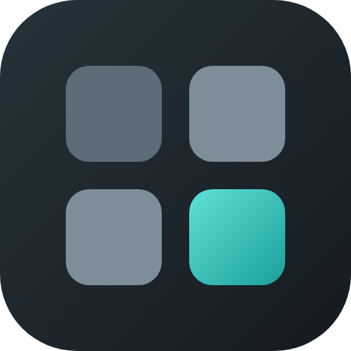

Dialboard
Deine Neuer-Tab-Seite mit Speed Dials.
Dialboard ersetzt die Neuer-Tab-Seite deines Browsers durch ein Raster aus Speed Dials, gruppiert in Tabs, dazu eine Ansicht deiner Lesezeichen. Alles bleibt zuerst auf deinem Gerät. Einen eigenen Server gibt es nicht.
Was es kann
- Speed Dials in Gruppen, per Drag & Drop sortierbar, mit Mehrfachauswahl
- Lesezeichenansicht mit Ordnern, Bearbeiten und Verschieben
- Pro Kachel ein Symbol, ein eigenes Bild oder ein Screenshot der Seite, mit Zoom, Position und transparenter Farbe
- Hintergrundbild mit Entsättigung, Weichzeichner und Farb-Overlay
- Import von Lesezeichen aus Firefox, Chrome, Edge und Safari
- Abgleich zwischen Geräten über den Browser-Sync oder, wenn du willst, über einen versteckten App-Ordner in deinem Google Drive
Datenschutz in Kürze: Keine Werbung, keine Statistik, kein eigener Server. Was die Erweiterung wann ins Netz schickt, steht in der Datenschutzerklärung.